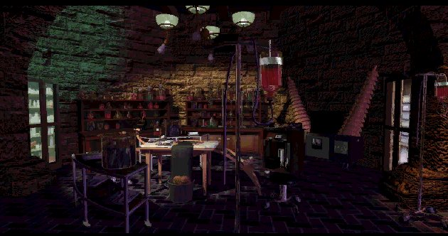

"Haaasshaaaas"
Eastereggs, stuff the makers put in their games and nobody knows about it. Like saying to someone:'I have a really good joke. But I'm not going to tell you.' One easteregg in the seventh guest was the painting of George Sanger (The Fat Man, who made the music) in the Gallery. The seventh guest has a secret code too. Read for yourself...
There is a code so that you can go to every room in the game. Here's how to do it. When you see the menu type: Zaphod Beeblebrox. This name belongs to a character in the book
'The hitchhikers guide to the galaxy' by Douglas Adams. Now you here someone say 'Groovy!' (or groovie, the name of the software program in the seventh guest that plays the movies). Move your cursor to the
corners of the board. The cursor turns into the teeth-cursor. Click and you will see little pictures of every room in the mansion. Click on each picture to visit that room.
If you listen to the scene with Elinor in the mirror, you might here something strange. If you then record the sound and
reverse it, this is what you hear. 'No one knows what happened next door. There is no one left to say. If you should see
old man Stauf, get on your knees and pray.' It's the part of the childrens verse that never got in the game. But after
this discovery you find out, that it was in the game all along. Thanks to Christoph Mueller for letting me know about this!
This is the reversed piece of audio in which you can hear the song, this is the wav version.
This is the reversed piece of audio in which you can hear the song, this is the mp3 version.